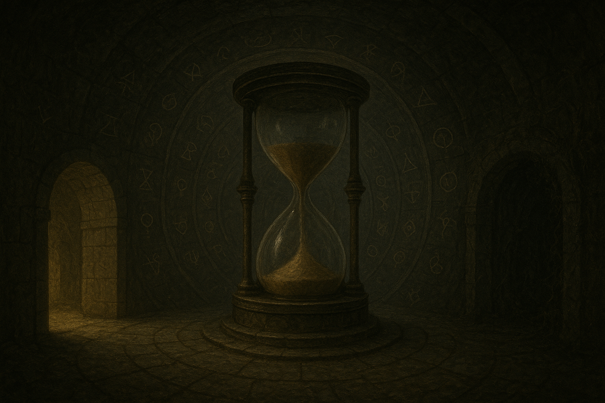

Du gelangst in eine kreisrunde Kammer. In der Mitte steht eine gewaltige Sanduhr, so groß wie ein Mensch. Der Sand rieselt langsam von oben nach unten, doch etwas ist seltsam - der Sand fließt manchmal rückwärts, als würde die Zeit selbst verwirrt sein.
An den Wänden der Kammer sind seltsame Symbole eingraviert, die im schwachen Licht zu pulsieren scheinen. Du spürst eine merkwürdige Energie in der Luft, als würde dieser Ort außerhalb der normalen Zeit existieren. Zwei Ausgänge führen aus der Kammer heraus: Ein Tunnel, der nach unten führt und von einem warmen Lichtschein erhellt wird, und ein Tor, das scheint als wäre es von Pflanzen überwuchert.